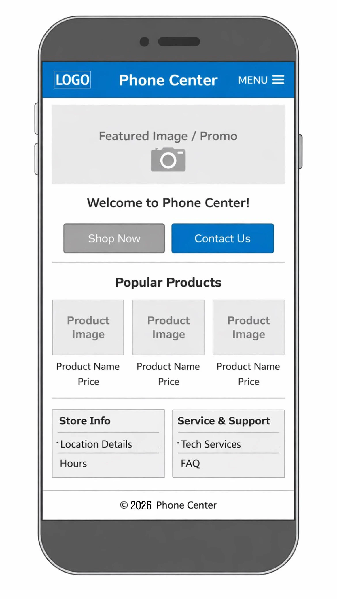
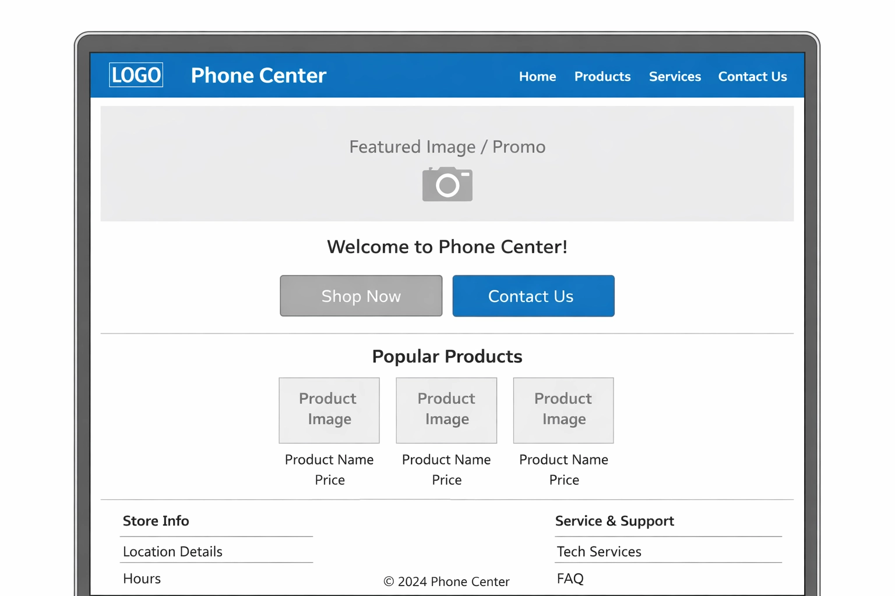

Site Name
Phone Center
This name represents a local mobile phone store with more than 21 years of experience offering cell phones, accessories, and technical service. The name is simple, easy to remember, and directly identifies the type of business.
Site Purpose
The purpose of this website is to provide information about Phone Center, its products, and services. The site will help customers learn about available phones and accessories, find technical service information, and easily contact the store. It will also serve as an online presence to strengthen the business image and reach more potential customers.
Scenarios
- What products and phone brands are available at Phone Center?
- How can I contact the store or request technical support?
- Where is the store located and what are its business hours?
Color Scheme
Primary Color: #1E90FF – Used for headings, navigation, and buttons.
Secondary Color: #F5F5F5 – Used for backgrounds and sections.
Accent Color: #000000 – Used for text and footer.
Typography
Headings Font: Montserrat – Used for titles and headings.
Body Font: Roboto – Used for general content and paragraphs.
Wireframes
Mobile View

Desktop View
